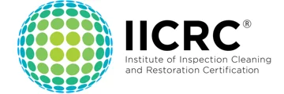
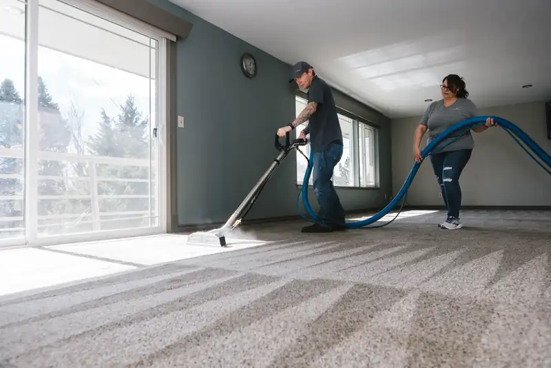
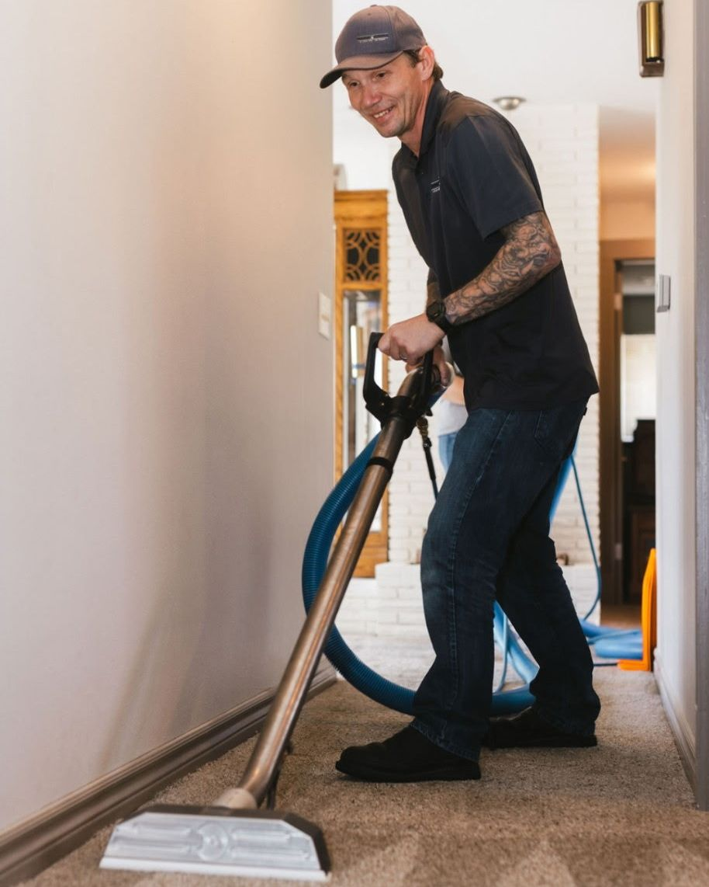
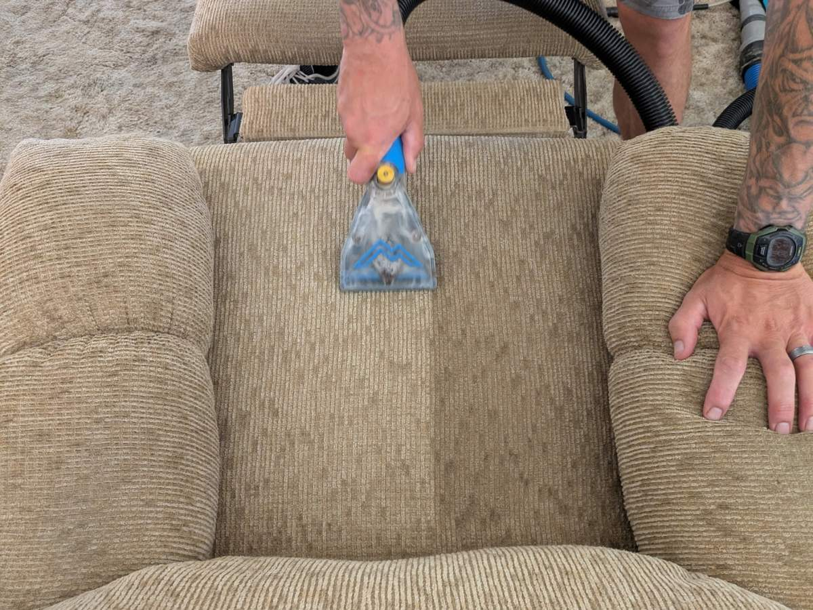
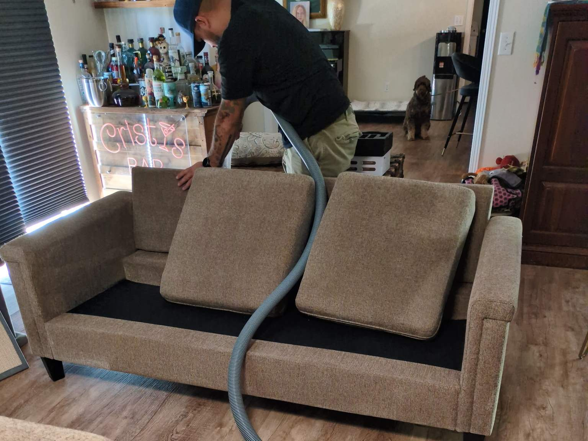
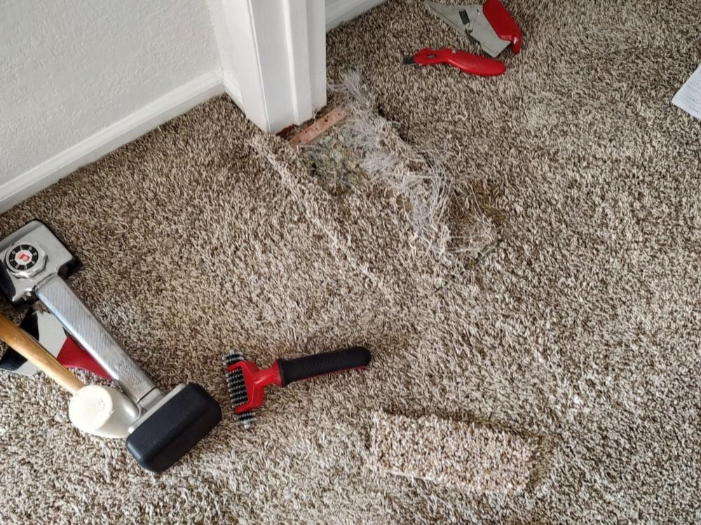
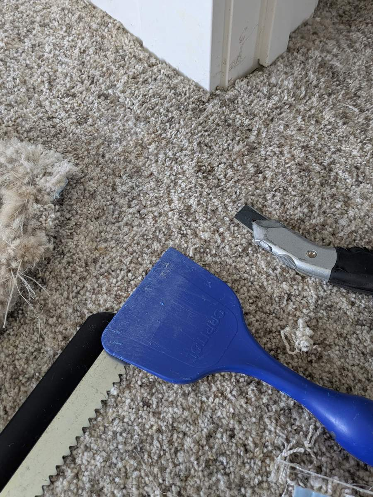
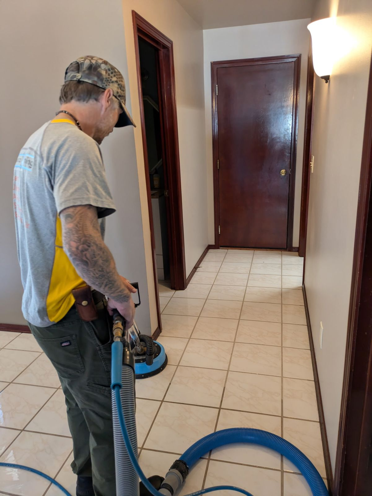
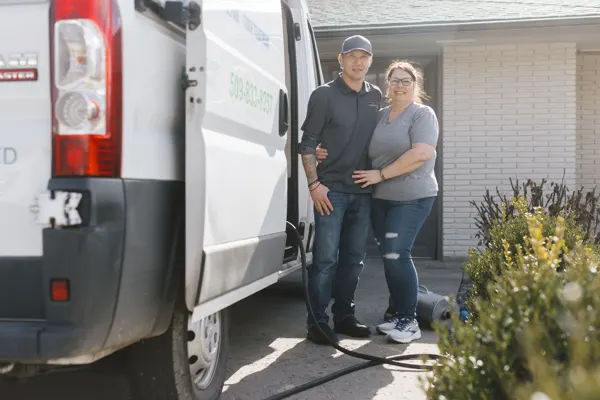

Yakima County, WA
Locally owned and operated by James and Renee Hughes, and lead tech Joel Nateras. IICRC certified. We service residential and commercial.
Call 509-833-8257Free estimates. Mon to Fri, 8:30 AM to 5:00 PM.


We come to your home or business.

Hot water extraction to lift dirt, stains and odors.


Sofas, chairs and fabric furniture. One pass on a customer's chair shows the difference.


Patches, seams, and re-stretching for wrinkles and ripples.


Family-run in Yakima
Raindrop Cleaning is owned and operated by James and Renee Hughes. Our lead technician is Joel Nateras. In business since 2008. Getting started is simple:
150+ customer reviews. A few in their own words:
"Very responsive, got to me quickly, friendly and did a wonderful job. Carpet looks great and the cleaner they use smells so good ;)"
Customer, Yakima
"My area rugs were really dirty. After James cleaned them they looked brand new. Great job! I highly recommend them. Give them a call, you won’t be disappointed."
Customer, Yakima
"We highly recommend Raindrop Cleaning as the ones you can trust to get the job done well. We will definitely use them again."
Jennifer Tate, Yakima WA (excerpt)
Serving Yakima and surrounding Yakima County. Free estimates, Mon to Fri, 8:30 AM to 5:00 PM.
Call 509-833-8257